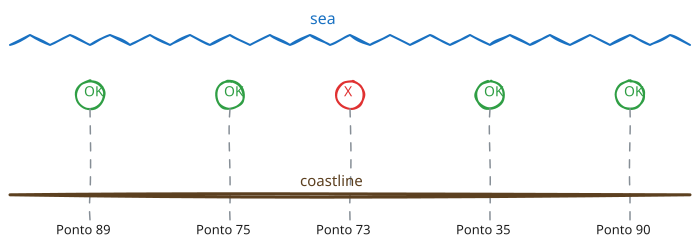

MIP-0016: Water-quality points on the map — OK / not-OK marks, placed in the sea¶
| Status | Draft |
| Author | Claude Fable 5.1, for M. Hoffmann (request of 6 Sep 2026: "attach in the map the points cited (water quality) with OK or not-OK signs over the map; be conscious to tag the point in the sea and not on the earth, as the map displays today") |
| Created | 2026-09-06 |
| Phase | 1 — the map exists (MIP-0005) and the data is already in its board JSON; nothing earlier-phase is missing |
| Related | MIP-0001 (the IMA/SC feed and WaterQualityMatcher), MIP-0005 (the board JSON and app.js), MIP-0009 (wave markers and hover — same render(), must share one marker anchor), ARCHITECTURE.md §7 (Overpass fair use) |
| Effort | M — one pure geometry module (core/geo/Coastline), one extra Overpass query per site build, additive board fields, a JS/CSS layer with a legend; no new module, no new dependency |
| Gain | user value (the safety-critical fact — which stretch of a beach is IMPRÓPRIA — becomes visible on the map instead of buried in a card) |
| Effort vs Gain | do next — the data is already shipped to the browser (§2), so most of the effort is the placement geometry, which also fixes today's inland beach markers |
| Depends on | MIP-0005 (Implemented). Coordinates with MIP-0009 (Draft) on the marker anchor (§5.4). No Phase 1 gate, no cloud resource — the coastline comes from OpenStreetMap |
| Risk | the offshore offset lands in the wrong water — a river mouth, a lagoon, the far side of a spit — for a few points, and a wrong-looking pin costs more trust than no pin (§8) |
| Cost so far | — |
1. Summary¶
The map gets one small marker per bathing-water sampling point: a green circle with a ✓ for
PRÓPRIA, a red circle with a ✕ for IMPRÓPRIA, grey with a ? when the agency has not classified it,
hollow when the newest sample is older than the 45-day freshness window. Each is drawn in the
water, a fixed distance off the OpenStreetMap coastline nearest the point, because the
agency's coordinates, and OSM's own beach centres, are on land (§2). The same placement function
moves the existing beach markers offshore, so MIP-0009's wave glyphs inherit a sea anchor. No new
data source: every field the layer draws is already in beaches[].water.points[] of the board.
2. Motivation¶
MIP-0001 made a stream mouth's IMPRÓPRIA veto the score, and MIP-0005 put every sampling point in
the board JSON (site/board.schema.json, water.points[]: point, location, lat, lon, condition,
sampled_on, enterococci, rain). The page, however, only lists them as text inside the card
(app.js, renderCard()); on the map a beach is one dot coloured by score. Praia do Campeche has
five points 3 km apart with one IMPRÓPRIA among them (Ponto 73, Riozinho, 749 enterococci/100 mL
in the 2026-09-03 bulletin): the map cannot show where to avoid.
The placement problem is real and measured, not a hunch. Checked 2026-09-06 against the OSM
coastline around Campeche (one Overpass query, 13 natural=coastline ways, appendix A):
| Point | Distance to coastline | Side |
|---|---|---|
| Ponto 89 (Av. Jerônimo Venâncio Chagas) | 34 m | land |
| Ponto 75 (Av. Campeche 300, "no mar") | 87 m | land |
| Ponto 73 (Riozinho do Campeche) | 145 m | land |
| Ponto 35 (Av. Pequeno Príncipe) | 79 m | land |
| Ponto 90 (Rua Campos Limpos) | 28 m | land |
OSM relation Praia do Campeche, Overpass center |
542 m | land |
IMA's LATITUDE/LONGITUDE is the street access point the LOCALIZACAO names, and Overpass's
out center for a multipolygon beach is a bounding-box centre that falls behind the dunes. Both
end up on the earth. Drawing them where they are would be misleading twice over.
3. User-visible change¶
Before: one dot per beach; the water verdict is a colour (red = every fresh point IMPRÓPRIA) and a line in the card.
After, at the area zoom (11): beaches as today, plus a legend line
✓ water OK · ✕ water not OK · ? unclassified · hollow = sample older than 45 days (IMA/SC).
Zooming to a beach (≥ 13) the sampling points appear a little off the shore:

Hover / tap on (✕):
✕ IMPRÓPRIA — Ponto 73, Riozinho do Campeche
749 enterococci/100 mL (limit 100), sampled 2026-08-25, rain: absent
Source: IMA/SC · pin placed 120 m off the nearest coastline
The beach's own marker moves from the dune centre to the water in front of it; its card's "Where" link keeps the OSM coordinates. Colour is never the only signal: shape (✓/✕/?) and the hollow ring carry the same information, and every tooltip says it in words.
4. Data sources and dependencies reviewed¶
4.1 IMA/SC feed — already integrated (MIP-0001 §4.1), nothing new fetched¶
Per point: coordinates, PONTO_NOME, LOCALIZACAO, last five samples. Verified 2026-09-05 (MIP-0001)
and re-read from the checked-in fixture local/src/test/resources/ima-mapa-sample.json on
2026-09-06 for the table in §2. Not verified: whether any point in the full 260-point feed is
already water-side: the fixture's 14 are all land-side or lagoon; the function in §5.1 handles a
water-side point by leaving it where it is.
4.2 OpenStreetMap natural=coastline via Overpass — the pick for "which way is the sea"¶
- One query per area at site-build time:
way["natural"="coastline"](around:R, lat, lon); out geom;: 29 KB for 3 km around Campeche, 13 ways, 392 segments (2026-09-06). For an area radius of 30 km (site/areas.json) expect a few hundred KB; one call per build, well inside the fair useARCHITECTURE.md§7 already documents forBeachFinder's query. - Direction convention: OSM coastline ways are drawn with land on the left, water on the right (wiki: Tag:natural=coastline). This is what makes "toward the sea" computable without a land polygon. It was applied in appendix A and agreed with the known geography for all six test points.
- Licence: ODbL, already attributed on the page (tiles and Overpass,
SOURCE_LINKS). - Not verified: how often the convention is violated in this region (a reversed way would flip a pin onto land; §5.1's centroid check catches that case); Overpass load at 30 km radius.
4.3 Reviewed and not picked¶
- Beach polygon geometry (
out geomon the beach relation itself): gives the sand, not the sea; the seaward edge of a multipolygon is not identifiable without the coastline anyway. - Open-Meteo Marine's grid as a "this is sea" oracle: the marine API answers for the nearest sea cell, it does not say whether the query point is wet. Rejected.
- Hand-placed offsets per point (a JSON of corrections): works for 14 points, not for 260 and
not for INEA/RJ later. Kept only as the manual-override escape hatch (§5.1,
pins.json).
5. Design¶
5.1 Pure geometry — core/src/main/scala/marola/geo/Coastline.scala¶
final case class Segment(a: Coordinates, b: Coordinates) // one coastline edge, OSM direction
final case class Coastline(segments: Vector[Segment]):
def nearest(p: Coordinates): Option[(Segment, Coordinates, Double)] // segment, foot point, metres
def isWaterSide(p: Coordinates, s: Segment): Boolean // right of a→b (OSM convention)
enum Placement derives CanEqual:
case Provider // the given point was already ≥ MinSeaMetres into the water: kept
case Offset // moved OffsetMetres seaward of the nearest coastline foot point
case Unplaced // no coastline within MaxCoastMetres (or none fetched): drawn where given, flagged
final case class SeaPin(at: Coordinates, placement: Placement, coastMetres: Double)
object Coastline:
val OffsetMetres = 120.0 // far enough to clear the surf line at zoom 13, near enough to read as "here"
val MinSeaMetres = 30.0 // a point this far into the water is left alone
val MaxCoastMetres = 2000.0 // beyond this the nearest coastline is not "this beach" → Unplaced
/** Deterministic: same inputs, same pin. `landHint` (the beach's OSM centre) must be land-side of
* the chosen segment; if it is not, the segment is treated as reversed — one mis-drawn way must
* not put a pin behind the dunes. */
def place(p: Coordinates, coast: Coastline, landHint: Coordinates): SeaPin
Equirectangular projection around the point (the same maths as appendix A): sub-metre error at
this scale, and no dependency. A manual override file site/pins.json ({"<provider>/<point id>":
{"lat":…, "lon":…}}) wins over place when present, for the handful of river-mouth cases §8 names.
5.2 Fetching — core/src/main/scala/marola/beaches/CoastlineFinder.scala¶
def around(centre: Coordinates, radiusKm: Double): Coastline < Sync, an Overpass out geom
query with BeachFinder's endpoint, timeouts and retry. Failure is not fatal: the build logs it
and every pin is Unplaced (§5.4 renders that honestly). Used only by SiteBuilder; the CLI and
the MCP server keep printing the agency's coordinates.
5.3 Board JSON — additive, schema stays 1¶
Board.build gains coast: Option[Coastline] and, per beach:
"marker": { "lat": -27.6861, "lon": -48.4786, "placement": "offset" },
"water": { "...": "as today", "points": [ {
"...": "as today",
"sea_lat": -27.6862, "sea_lon": -48.4797, "placement": "offset", "coast_m": 87,
"fresh": true, "age_days": 12 } ] }
site/board.schema.json lists the new fields as optional (MIP-0009 precedent); beaches[].lat/lon
keep the OSM centre so links and the "near me" distance are unchanged. fresh/age_days are
computed from today with WaterQuality.MaxSampleAgeDays, so the page never re-implements the
45-day rule.
5.4 Page — site/static/app.js, style.css¶
- A
waterLayer(L.layerGroup) rebuilt inrender(): oneL.markerper point with adivIcon, inline SVG circle, fill by condition, a ✓ / ✕ / ? path,stroke-dasharraywhen!fresh, a dashed grey ring and "position unverified" in the tooltip whenplacement == "unplaced". Shown at zoom ≥ 13; below that the beach marker's colour carries the verdict as today (§11 Q1). - Beach markers anchor at
marker.lat/lonwhen present, elselat/lon; an old board still renders. This is the anchor MIP-0009's wavedivIconwill use. - Tooltip text is the board's strings and numbers plus fixed labels; nothing goes through the LLM.
- Legend line in
index.html;SOURCE_LINKSalready links IMA/SC.
6. Scoring / safety impact¶
None. Swimability.score, waterVerdict and the notes are untouched; this MIP only changes where
and how existing verdicts are drawn. Coastline.place never alters a condition.
7. Verification plan¶
CoastlineSpec(core, pure, deterministic): a synthetic N→S coastline with water to the east; a land point 80 m west moves to 120 m east of the foot point (Offset); a point 200 m east stays (Provider); the same coastline reversed flips the side only untillandHintcorrects it; a point 3 km away isUnplaced;coastMetresmatches the analytic distance within 1 m.BoardSpec: with the trimmed real coastline fixturecli/src/test/resources/fixtures/ coastline-campeche.json(appendix A's response), all five Campeche points come outoffset, water-side, 100–140 m from the coast; Rio Tavares (no points) unchanged; the schema validator accepts the board with and without the new fields.SiteBuilderSpec: a fixture build writesmarkerandsea_lat/sea_lon; a build withcoast = Nonewritesplacement: "unplaced"everywhere and still validates.- Page:
node --check app.js; if MIP-0009'sscripts/site_check.jsharness has landed, assert one water marker per point and the legend text; else a manual pass (just site-build floripa && just site-serve, zoom to Campeche, Ponto 73 is red-✕ in the water in front of the Riozinho). - "Done": the live map shows the points offshore at zoom 13, the legend explains the glyphs, and the golden suite is unchanged.
8. Risks, limitations, and honest caveats¶
- Wrong water. A perpendicular offset at a river mouth (Ponto 73 sits on the Riozinho) or a
narrow spit can land in the river or the wrong bay.
pins.jsonexists for these; the tooltip always says "pin placed N m off the nearest coastline", so the pin is read as a marker, not a GPS fix. - Coastline gaps. Where OSM has no coastline within 2 km, or Overpass fails, pins are
Unplacedand drawn dashed with the words, never silently on land as today. - The agency's point is not the swim spot. IMA samples at the access point; the pin says
"this stretch", not "this square metre". The tooltip keeps the agency's own
LOCALIZACAO. - Lagoon points stay off the map.
WaterQualityMatchernever attaches inland water to a sea beach (MIP-0001), so Lagoa da Conceição's eight points are absent, as they are today (§11 Q3). - Stale is not clean. A hollow ✓ is still drawn as ✓ because that is the agency's last word; the ring and the age in the tooltip are what say "old". Absence of a point is never drawn as OK.
- Clutter. Five pins over 3 km at zoom 11 would overlap the beach marker; hence the zoom gate.
9. Alternatives considered¶
- Draw the points where the agency puts them: measured to be on land for every fixture point (§2); the user's explicit objection. Rejected.
- Fixed bearing per area ("the sea is east of Florianópolis"): wrong for the south and west coasts of the same island. Rejected.
- Snap to the beach polygon's seaward edge: needs the coastline anyway to know which edge is seaward. Rejected as a second mechanism for the same input.
- Colour the beach marker per worst point, no pins: is what exists; loses where. Rejected.
- Do nothing: the card lists the points; nobody opens five cards to find the stream mouth.
11. Open questions¶
- Zoom gate at 13, or always show pins with the beach marker hidden when its points are visible? Proposal: gate at 13 in v1; revisit with MIP-0009's clutter findings.
OffsetMetres = 120: too far reads as "out at sea", too near hides under the coastline stroke at zoom 13. Proposal: 120 m, tuned once on the live map, recorded here.- Show lagoon points (Lagoa da Conceição) as their own layer on the lagoon, outside the beach model? Real user value (they are the most often IMPRÓPRIA); needs a "water body" notion the matcher lacks. Proposal: separate MIP.
- Commit the per-area coastline as a fixture-like cache (
site/dist/data/<area>/coastline.json) so a Pages build survives an Overpass outage with yesterday's coast? Proposal: yes if task 2's live builds show any Overpass failure; otherwise not. - Should
Report(CLI) and the MCPget_water_qualityreturn the sea pin too? Proposal: no, they serve the agency's coordinates; the pin is a map presentation choice.
Appendix¶
A. Coastline check, 2026-09-06. Query: [out:json][timeout:25]; way["natural"="coastline"]
(around:3000,-27.68,-48.475); out geom; → 13 ways, 392 segments, 29 481 bytes. Side test:
equirectangular projection at lat −27.686, nearest segment by point-to-segment distance, side from
the sign of the cross product (a→b, a→p); positive = left = land per the OSM convention. Results in
§2; Joaquina's Ponto 33 lay outside the 3 km query and was not classified. The response is the
candidate coastline-campeche.json fixture for §7.
B. Fixture coordinates used (local/src/test/resources/ima-mapa-sample.json): Ponto 89
−27.6661915/−48.4756481; 75 −27.686247/−48.480933; 73 −27.6859487/−48.4814381; 35 −27.6898635/
−48.4818292; 90 −27.6976085/−48.4898874. OSM Praia do Campeche (cli/src/test/resources/fixtures/
overpass-campeche.json): relation, center −27.6859814/−48.4858158.